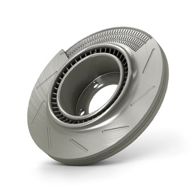

Services

COMPLETE SYSTEM PART PRODUCTION
DPP engineers and technicians provide in depth expertise to deliver the most successful product engineering results possible. Our talented team is made up of engineers that specialize in technical markets applicable to any stage of the customers requirement.
MJF By HP

We are unlocking the full potential of Multi Jet Fusion (MJF) 3D printing technology
With groundbreaking speed and robust material properties, Multi Jet Fusion (also known as MJF or HP 3D printing) will speed your project's time to market. We are now heavly investing in our new 3D Manufacturing Center. This is powered by 5 HP Jet Fusion 3D printers. We now have the capability to produce hundreds of thousands of production parts each week. With our upgraded capacity combined with MJF's incredible speed and material properties, we can now fulfill high volume production orders - faster than ever.
HP's 3D printing technology utilizes fusing and detailing agents over a powdered nylon 12 building area, with infrared lamps fusing an entire layer in a single pass. This highly efficient method can build functional, geometrically complex parts 80 micron layers at a time - with mechanical properties that rival injection molded parts.
With this modern production process, we are able to produce parts faster than ever!
3 Day MJF Printing Available
DPP takes you from innovation to production with speed, quality, and competitive pricing. We produce thousands of high-quality prototype and production parts daily and ship right to your door within 3 days.
What is a voxel?
In 3D printing, a voxel represents a value on a regular grid in a three-dimensional space, like a pixel with volume. Each voxel contains volumetric information that will essentially bring a product to life with the desired properties.
BENEFITS
APPLICATIONS
USE CASES
DMLS
Direct Metal Laser Sintering

Production Capabilities for Metal 3D Printing
Looking for an additive manufacturing solution for production projects? With our metal 3D printing technology, you’re able to choose from several secondary processes like post-process machining, tapping, reaming, and heat treatments that produce end-use production parts. To ensure high-quality parts, we also offer powder analysis, material traceability, process validation, and inspection reporting, and our direct metal laser sintering (DMLS) 3D printing process is ISO 9001 and ISO 13485 certified. It’s industrial 3D printing designed around your project needs—whether prototyping or production.
We design and manufacture additive manufacturing systems for manufacturing components in a variety of metals using a process called metal powder bed fusion (or laser melting). Our expertise in process development and our experience in using the technology in our own manufacturing operations enable us to provide turn-key and optimised additive manufacturing solutions for a broad range of applications in the industrial and healthcare sectors.
The ultimate in speed and precision for metal 3D printing, Direct Metal Laser Sintering (DMLS), also known as SLM (Selective Laser Melting), additively manufactures 99% dense metal prototypes and end-use parts. Producing fine featured parts with the strength and durability comparable to forged parts, the DMLS process is ideal for functional components requiring fast lead times and a design freedom that you do not get with traditional machining.
In this process, dual 400-watt lasers micro-weld alloy powders at 30 micron layers as a bi-directional recoater blade deposits the next layer of alloy powder. With the unique dual laser features, this technology builds robust, metal prototypes and end-use parts with remarkably accurate features.
What is AM?
Additive manufacturing (AM), also called 3D printing, creates a three-dimensional part from a digital file.
Thin layers of material are used to create complex shapes which cannot be produced by 'traditional' techniques such as casting, forging and machining.
AM provides new design possibilities, including opportunities to combine multiple components in production, minimise material use and reduce tooling costs.
Metal 3D Printing Material Options
BENEFITS
APPLICATIONS
SLA

Stereolithography (SLA) is the first commercialized 3D printing technology, invented by 3D Systems' Co-Founder and Chief Technology Officer Chuck Hull in the 1980s. It uses an ultraviolet laser to precisely cure photopolymer cross-sections, transforming them from liquid to solid. Parts are built directly from CAD data, layer-by-layer into prototypes, investment casting patterns, tools, and end-use parts.
Once the SLA printing process is complete, SLA parts are cleaned in a solvent solution to remove any residual uncured resin from the part surface. Cleaned parts are then cured in a UV oven.
About Stereolithography (SLA)
SLA is all about precision and accuracy, so it is often used when form, fit, and assembly are critical. The tolerances on SLA parts are typically less than 0.05 mm, and SLA offers the smoothest surface finish of any additive manufacturing process. With the quality SLA can achieve, it is particularly useful for creating highly precise casting patterns (e.g., for injection molding, casting, and vacuum casting) as well as functional prototypes, presentation models, and form and fit testing. SLA technology is extremely versatile and can be used in any number of areas where precision is paramount.
SLA also offers a speed advantage when you require a variety of functional prototypes or quick access to casting patterns. SLA’s winning combination of speed and precision make it an excellent choice for evaluating prototypes. The accuracy of SLA means your prints are faithful to the final design, allowing you to identify and correct design flaws, collisions, and potential mass-manufacturing hurdles before production begins. SLA provides comparable characteristics to parts normally machined from polypropylene or ABS for low- to mid-volume production, and doesn’t require slow, expensive retooling for customization or required tooling changes. SLA also allows for reduced material costs, as any unused resin remains in the vat, ready for future projects.
Because SLA parts can require support structures, they often require post-processing, which opens opportunities for new part characteristics. SLA parts can be vapor honed, or bead or sand blasted, and can even be electroplated with metal, such as nickel. Electroplating makes SLA parts significantly stronger, and also makes parts electrically conductive and more dimensionally stable in moist environments.
BENEFITS
APPLICATIONS

Polyjet

What is PolyJet Technology?
PolyJet is a powerful 3D printing technology that produces smooth, accurate parts, prototypes and tooling. With microscopic layer resolution and accuracy down to 0.014 mm, it can produce thin walls and complex geometries using the widest range of materials available with any technology.
BENEFITS
APPLICATIONS
RGD720
The RGD720 3D printing material is a translucent, multi-purpose photopolymer with high dimensional stability and surface smoothness.
DraftGrey

DraftGrey is the cheapest and fastest way to model on Stratasys PolyJet printers, printing at 2x the speed than normal and perfect for concept modeling.
WSS™150
Water soluble support for fast, hands-free removal with standard or countertop dishwasher or by submerging in a vessel filled with regular tap water (preferred solution for delicate and intricate parts with internal cavities).
Tango
The Tango 3D printing material simulates soft-touch coatings, nonslip surfaces, rubber surrounds or overmolding for realistic prototyping.
Vero
The vivid, multi-color Vero 3D printing material combines fine detail with strength and versatility, ideal for rapid prototyping and tooling.
SLS
We Are Global Technology and Quality Leaders for High-End Machines in Industrial 3D Printing
DPP is the perfect partner for manufacturing organizations, whether they're looking to start 3D printing for the first time or incorporate a 3D printing division into their current production landscape to complement existing technologies. The components of our modularly structured portfolio of solutions are optimally coordinated with one another and can be combined according to your requirements.
We support our customers throughout their entire journey from entry into additive manufacturing to factories ready for series production. DPP offers all the elements you need from a single source: systems, materials and process parameters. Our portfolio also features global service and comprehensive consulting offers. All elements are intelligently coordinated with one another and guarantee reliably high part quality and therefore a decisive competitive edge for our customers.
We don’t just offer single products, but integrated solutions, drawing from an extensive, diverse, and quality-oriented ecosystem of strong partners.
Our Materials for Additive Manufacturing Find the Right Material for Your Application
Materials play a vital role in manufacturing quality. We have a comprehensive portfolio of highly-developed plastic and metal materials for industrial 3D printing and ensure uniform quality across every powder batch with multi-dimensional quality management.
We provide a wide selection of materials with different properties and certifications. With the right materials, you can realize target property profiles the best possible way for your products.
BENEFITS
APPLICATIONS

CNC
CNC Prototyping & Production Parts
CNC manufacturing is a subtractive process that starts with our machinists programming our machining centers directly from your CAD files.
Our machining centers use tool-bits of varying sizes and shapes to remove material from a solid block of metal or plastic to reveal your part shape. It’s considered a subtractive technology, as opposed to additive manufacturing or 3D printing.
Standard CNC machining processes include milling, turning, surface grinding and electrical discharge machining (EDM).
Machined parts are durable, produced in production materials, highly accurate, and have a superb surface finish. These parts can be painted or polished to create highly cosmetic or clear parts.